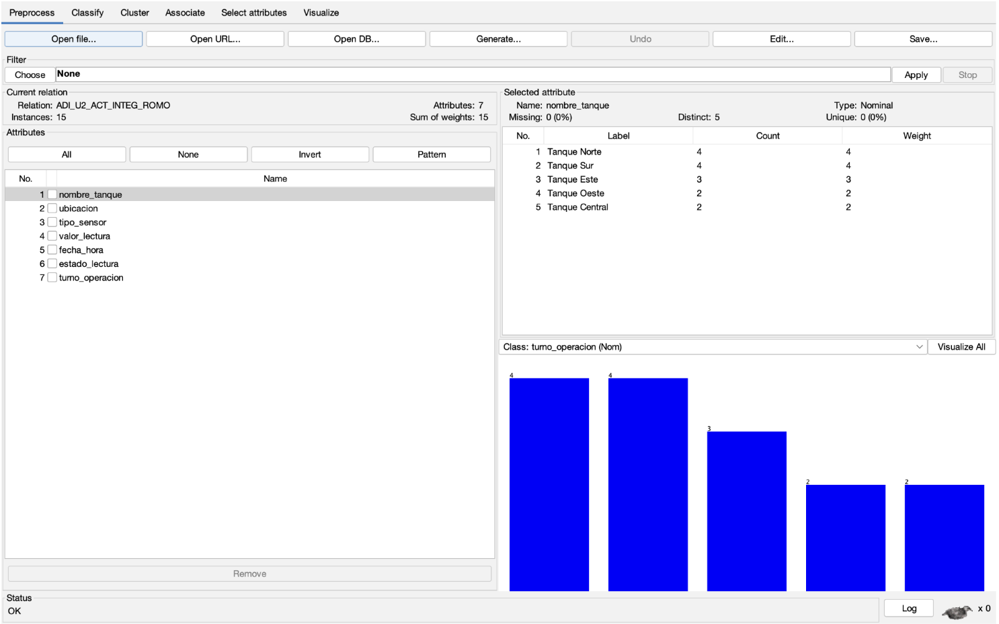
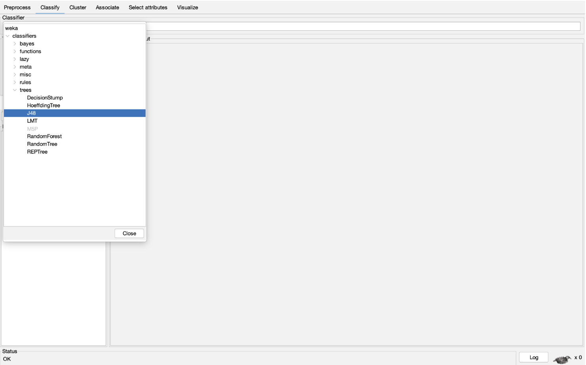
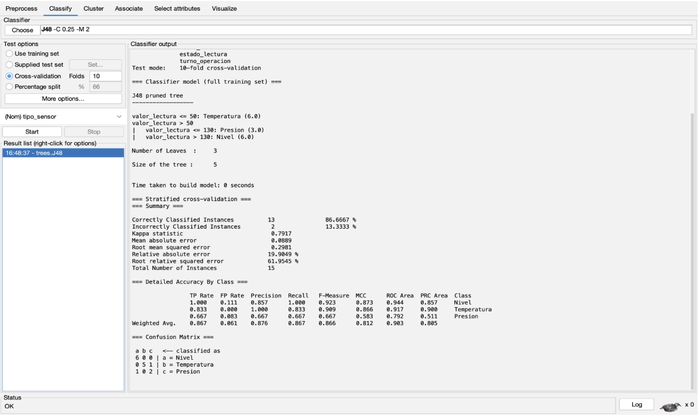

Capturas del Proyecto

Importación de la vista minable.

Visualización de atributos y registros.

Aplicación del algoritmo J48.

Resultados obtenidos mediante WEKA.
La minería de datos permite analizar grandes volúmenes de información para descubrir patrones, tendencias y relaciones útiles para la toma de decisiones.
En este proyecto se utilizaron herramientas de análisis de datos para aplicar técnicas de clasificación y agrupamiento sobre una vista minable relacionada con sensores industriales y monitoreo de tanques de almacenamiento.
Las principales herramientas utilizadas fueron WEKA, GitHub Pages, HTML, CSS y JavaScript.
La sociedad de la información utiliza tecnologías digitales para almacenar, compartir y distribuir información.
La sociedad del conocimiento transforma la información en aprendizaje útil para generar innovación y conocimiento.
La inteligencia de negocios permite apoyar la toma de decisiones mediante reportes e indicadores.
OLAP permite realizar análisis multidimensional de grandes volúmenes de datos.
La minería de datos busca encontrar patrones ocultos dentro de los datos.
Una vista minable es un conjunto de datos preparado específicamente para aplicar técnicas de minería de datos.
Se seleccionaron datos relevantes relacionados con sensores industriales.
Se verificó la calidad y consistencia de los datos.
Los datos fueron convertidos a formato CSV para utilizarlos en WEKA.
Se aplicaron algoritmos de clasificación y agrupamiento.
Los resultados obtenidos fueron interpretados para identificar patrones importantes.
| Tarea | Técnica | Algoritmo |
|---|---|---|
| Clasificación | Árboles de decisión | J48 |
| Agrupamiento | Clustering | K-Means |
| Asociación | Reglas de asociación | Apriori |
Las herramientas ETL permiten extraer, transformar y cargar datos.
Un Data Warehouse es un almacén centralizado de información.
Un DataMart es una subdivisión especializada de un Data Warehouse.
MOLAP permite realizar análisis multidimensional mediante cubos de información.
Para el análisis de datos se utilizó una vista minable relacionada con sensores industriales de temperatura, presión y nivel.
Importación de la vista minable.

Visualización de atributos y registros.

Aplicación del algoritmo J48.

Resultados obtenidos mediante WEKA.
El proyecto permitió aplicar técnicas de minería de datos para identificar patrones importantes dentro de un conjunto de datos industriales.
El algoritmo J48 obtuvo una precisión del 86.66%, clasificando correctamente 13 de las 15 instancias.
Por otra parte, el algoritmo K-Means permitió agrupar registros similares facilitando la interpretación de los datos.